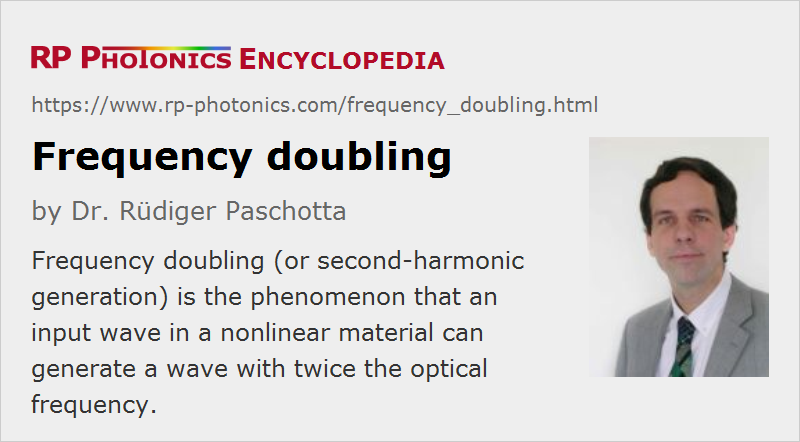

Frequency Doubling
Acronym: SHG = second-harmonic generation
Definition: the phenomenon that an input wave in a nonlinear material can generate a wave with twice the optical frequency
Alternative term: second-harmonic generation
More general terms: nonlinear frequency conversion
More specific terms: resonant frequency doubling, intracavity frequency doubling
German: Frequenzverdopplung
How to cite the article; suggest additional literature
Author: Dr. Rüdiger Paschotta
Crystal materials lacking inversion symmetry can exhibit a so-called χ(2) nonlinearity (→ nonlinear crystal materials). This can give rise to the phenomenon of frequency doubling [1], where an input (pump) wave generates another wave with twice the optical frequency (i.e. half the vacuum wavelength) in the medium. This process is also called second-harmonic generation. In most cases, the pump wave is delivered in the form of a laser beam, and the frequency-doubled (second-harmonic) wave is generated in the form of a beam propagating in a similar direction.
The article on nonlinear crystal materials lists a number of crystal materials, many of which are popular for frequency doubling. Examples are lithium niobate (LiNbO3), potassium titanyl phosphate (KTP = KTiOPO4), and lithium triborate (LBO = LiB3O5).
The Physical Mechanism
The physical mechanism behind frequency doubling can be understood as follows. Due to the χ(2) nonlinearity, the fundamental (pump) wave generates a nonlinear polarization wave which oscillates with twice the fundamental frequency. According to Maxwell's equations, this nonlinear polarization wave radiates an electromagnetic field with this doubled frequency. Due to phase-matching issues (see below), the generated second-harmonic field propagates dominantly in the direction of the nonlinear polarization wave. The latter also interacts with the fundamental wave, so that the pump wave can be attenuated (pump depletion) when the second-harmonic intensity develops: energy is transferred from the pump wave to the second-harmonic wave.
For low pump intensities, the second-harmonic conversion efficiency is small and grows linearly with increasing pump intensity, so that the intensity of the second-harmonic (frequency-doubled) wave grows with the square of the pump intensity:
where the factor γ depends on many details such as the effective mode area, the length of the crystal and many crystal properties including the effective nonlinearity.
Once pump depletion becomes significant, the further rise of second-harmonic power becomes slower. Of course, the converted power P2 cannot become larger than the input power P1.
Frequency doubling is a phase-sensitive process which usually requires phase matching to be efficient. This means that the second-harmonic field contributions generated at different locations in the nonlinear crystal coherently add up at the crystal's exit face. With proper phase matching and a pump beam with high intensity, high beam quality, and moderate optical bandwidth, achievable power conversion efficiencies often exceed 50%, in extreme cases even 80% [9, 11, 18]. Even values of the order of 90% are possible with flat-top spatial and temporal profiles. On the other hand, the conversion efficiencies are typically extremely small when phase matching does not occur. In such cases, the energy transferred by the χ(2) nonlinearity quickly oscillates back and forth between pump and second-harmonic wave, rather than consistently going in a certain direction. The lack of phase matching is also the reason why second-harmonic generation is usually not accompanied by other processes such as sum frequency generation of the pump and second-harmonic wave, or second-harmonic generation of the second-harmonic wave itself: phase matching for second-harmonic generation usually does not imply phase matching for the other mentioned processes.
Nonlinear Frequency Conversion of Laser Pulses
High conversion efficiencies can be achieved even with moderate or low average pump powers when the pump light is delivered in the form of pulses, as e.g. generated with a mode-locked or Q-switched laser. This is simply because for a given average power a pulsed laser exhibits higher peak powers, which lead to a stronger nonlinear interaction. Note, however, that for frequency conversion of ultrashort pulses, the effective interaction length and hence the conversion efficiency can be limited by group velocity mismatch, which causes a temporal walk-off. This effect is not relevant for nanosecond pulses from Q-switched lasers, but in that case there can still be some change of pulse duration; often, the frequency-doubled pulses are somewhat shorter than the pump pulses.
Intracavity and Resonant Frequency Conversion
Efficient frequency doubling at moderate powers (e.g. in continuous-wave operation) is often accomplished with intracavity frequency doubling, i.e., by placing the frequency doubler crystal inside a laser resonator, thus exploiting the high intracavity intensity. Yet another technique is to use a resonant enhancement cavity external to the laser (→ resonant frequency doubling). This is possible for single-frequency operation and also with mode-locked lasers, but usually requires active stabilization of one of the involved resonators.
Second-harmonic Generation in Waveguides
Nonlinear waveguides present a way to achieve efficiency frequency doubling at fairly low power levels, i.e., without resorting either to short pulses or to resonant enhancement. They key is that a waveguide makes it possible to maintain a small mode area (and thus high intensities for a given power level) over a greater length than would be possible in a bulk medium, where diffraction would limit the interaction length to something of the order of the Rayleigh length.
In particular, high-quality channel waveguides can be fabricated with different techniques in lithium niobate (LiNbO3) and lithium tantalate (LiTaO3), which are nonlinear crystal materials with particularly high nonlinearity. The most important techniques are ion exchange or proton exchange (exposing a small stripe on the crystal surface to a liquid, e.g. benzoic acid) and titanium or zinc indiffusion (by strongly heating a crystal with a narrow stripe of titanium or zinc metal deposited on the surface with lithographic techniques). (A variation is vapor phase indiffusion.) Such waveguides can be several centimeters long and can exhibit propagation losses well below 1 dB/cm and second-harmonic conversion efficiencies of more than 100%/W in a 1 cm long device.
Unfortunately, frequency doubling in waveguides involves various disadvantages, which limit its usefulness in many cases:
- Waveguides requires special fabrication techniques, which are not well established for all materials. (Particularly well developed are waveguides in LiNbO3 and LiTaO3.)
- It is necessary to efficiently couple the pump light into the waveguide. This introduces coupling losses and tight alignment tolerances.
- Angle tuning is not possible with a waveguide.
- Waveguides typically exhibit higher propagation losses.
For these reasons, the use of waveguides for frequency doubling is not very widespread.
Generating Short Wavelengths
Frequency doubling is a frequently used technique for generating light with short wavelengths:
- Green light with wavelength 532 nm can be generated by frequency-doubling the output of a neodymium- or ytterbium-based 1064-nm laser (→ green lasers). Green laser pointers are also usually based on this approach.
- Many blue laser systems are based on a frequency-doubled laser in the 0.9-μm region (e.g. 914 nm from Nd:YVO4).
- By further frequency doubling (or by sum frequency generation) still shorter wavelengths in the ultraviolet region (→ ultraviolet lasers) become accessible. The main challenges in this spectral region are the limited transparency range and (sometimes) limited durability of nonlinear crystal materials, and the strong chromatic dispersion (sometimes preventing phase matching or at least a large phase-matching bandwidth).
Frequency-doubled neodymium-based lasers can compete with large-sized argon ion lasers in terms of output power and beam quality, whereas having a far higher power efficiency and a longer lifetime.
For frequency doubling of ultrashort pulses, high single-pass conversion efficiencies are difficult to obtain at short wavelengths, because strong group velocity mismatch limits the interaction length, while optical damage limits the applicable optical intensities.
Design of a Frequency Doubler
For the design of a frequency doubler, a number of non-trivial aspects have to be considered:
- What nonlinear crystal material to use? Where to get it from with suitable anti-reflection coatings? How much protection will it need? Will it be sufficiently durable?
- Use noncritical or critical phase matching?
- What is the optimum crystal length and pump beam radius, taking into account factors such as beam divergence, spatial walk-off, group velocity mismatch and damage threshold (see the Spotlight article of 2007-09-21)?
- For noncritical phase matching: how good does the spatial homogeneity of the crystal temperature in the oven have to be? Can the coatings withstand the temperature cycles?
- For critical phase matching: how asymmetric will the second-harmonic beam profile be? What is the expected beam quality? Should one use walk-off compensation?
- In the case of a double pass through a crystal: what is the influence of relative phase changes of the fundamental and second-harmonic waves between the two passes?
- If resonant frequency doubling is considered: how to design the enhancement resonator for optimum performance and minimum sensitivity?
For finding the best configuration without costly and time-consuming iterations in the laboratory, it is recommended to carry out a careful design study as the first step.
Suppliers
The RP Photonics Buyer's Guide contains 38 suppliers for frequency doubling devices. Among them:
Questions and Comments from Users
Here you can submit questions and comments. As far as they get accepted by the author, they will appear above this paragraph together with the author’s answer. The author will decide on acceptance based on certain criteria. Essentially, the issue must be of sufficiently broad interest.
Please do not enter personal data here; we would otherwise delete it soon. (See also our privacy declaration.) If you wish to receive personal feedback or consultancy from the author, please contact him e.g. via e-mail.
By submitting the information, you give your consent to the potential publication of your inputs on our website according to our rules. (If you later retract your consent, we will delete those inputs.) As your inputs are first reviewed by the author, they may be published with some delay.
Bibliography
| [1] | P. A. Franken et al., “Generation of optical harmonics”, Phys. Rev. Lett. 7 (4), 118 (1961), doi:10.1103/PhysRevLett.7.118 (first report of second-harmonic generation, not yet phase-matched) |
| [2] | A. Savage and R. C. Miller, “Measurements of second harmonic generation of the ruby laser line in piezoelectric crystals”, Appl. Opt. 1 (5), 661 (1962), doi:10.1364/AO.1.000661 |
| [3] | A. Ashkin, G. D. Boyd, and J. M. Dziedzic, “Resonant optical second harmonic generation and mixing”, IEEE J. Quantum Electron. 2 (6), 109 (1966), doi:10.1109/JQE.1966.1074007 |
| [4] | W. J. Kozlovsky et al., “Efficient second harmonic generation of a diode-laser pumped cw Nd:YAG laser using monolithic MgO:LiNbO3 external resonant cavities”, IEEE J. Quantum Electron. 24, 913 (1988), doi:10.1109/3.211 |
| [5] | G. D. Boyd and D. A. Kleinman, “Parametric interaction of focused Gaussian light beams”, J. Appl. Phys. 39 (8), 3597 (1968) (a seminal work with a comprehensive quantitative discussion) |
| [6] | J. Reintjes, “Phase matching limitations of high efficiency second harmonic generation”, IEEE J. Quantum Electron. 20 (10), 1178 (1984), doi:10.1109/JQE.1984.1072294 |
| [7] | K. Kato, “Second-harmonic generation to 2048 Å in β-BaB2O4”, IEEE J. Quantum Electron. 22 (7), 1013 (1986), doi:10.1109/JQE.1986.1073097 |
| [8] | Y. B. Band et al., “Spectrum of second-harmonic generation for multimode fields”, Phys. Rev. A 42 (3), 1515 (1990), doi:10.1103/PhysRevA.42.1515 |
| [9] | Z. Y. Ou et al., “85% efficiency for cw frequency doubling from 1.08 to 0.54 μm”, Opt. Lett. 17 (9), 640 (1992), doi:10.1364/OL.17.000640 |
| [10] | R. Paschotta et al., “Nonlinear mode coupling in doubly-resonant frequency doublers”, Appl. Phys. B 58, 117 (1994), doi:10.1007/BF01082345 |
| [11] | R. Paschotta et al., “82% efficient continuous-wave frequency doubling of 1.06 μm with a monolithic MgO:LiNbO3 resonator”, Opt. Lett. 19 (17), 1325 (1994), doi:10.1364/OL.19.001325 |
| [12] | V. Pruneri et al., “49 mW of cw blue light generated by first-order quasi-phase-matched frequency doubling of a diode-pumped 946-nm Nd:YAG laser”, Opt. Lett. 20 (23), 2375 (1995), doi:10.1364/OL.20.002375 |
| [13] | R. Wynands et al., “How accurate is optical second-harmonic generation?”, Opt. Lett. 20 (10), 1095 (1995), doi:10.1364/OL.20.001095 |
| [14] | J.-P. Meyn et al., “Tunable ultraviolet radiation by second-harmonic generation in periodically poled lithium tantalate”, Opt. Lett. 22 (16), 1214 (1997), doi:10.1364/OL.22.001214 |
| [15] | J. Webjorn et al., “Visible laser sources based on frequency doubling in nonlinear waveguides”, IEEE J. Quantum Electron. 33 (10), 1673 (1997), doi:10.1109/3.631263 |
| [16] | W. J. Alford and A. V. Smith, “Frequency-doubling broadband light in multiple crystals”, J. Opt. Soc. Am. B 18 (4), 515 (2001), doi:10.1364/JOSAB.18.000515 |
| [17] | Q. H. Xue et al., “High-power efficient diode-pumped Nd:YVO4/LiB3O5 457 nm blue laser with 4.6 W of output power”, Opt. Lett. 31 (8), 1070 (2006), doi:10.1364/OL.31.001070 |
| [18] | T. Südmeyer et al., “Efficient 2nd and 4th harmonic generation of a single-frequency, continuous-wave fiber amplifier”, Opt. Express 16 (3), 1546 (2008), doi:10.1364/OE.16.001546 |
| [19] | A. Canagasabey et al., “High-average-power second-harmonic generation from periodically poled silica fibers”, Opt. Lett. 34 (16), 2483 (2009), doi:10.1364/OL.34.002483 |
| [20] | C. Stolzenburg et al., “700 W intracavity-frequency doubled Yb:YAG thin-disk laser at 100 kHz repetition rate”, Proc. SPIE 7578, 75780A (2010), doi:10.1117/12.840875 |
| [21] | M. Galli et al., “Generation of deep ultraviolet sub-2-fs pulses”, Opt. Lett. 44 (6), 1308 (2019), doi:10.1364/OL.44.001308 |
See also: resonant frequency doubling, intracavity frequency doubling, phase matching, parametric nonlinearities, nonlinear crystal materials, frequency tripling, frequency quadrupling, green lasers, blue lasers, ultraviolet lasers, The Photonics Spotlight 2006-08-15, The Photonics Spotlight 2006-09-29, The Photonics Spotlight 2007-03-05, The Photonics Spotlight 2007-09-21, The Photonics Spotlight 2007-10-17, The Photonics Spotlight 2008-01-14, The Photonics Spotlight 2008-01-27
and other articles in the category nonlinear optics

This encyclopedia is authored by Dr. Rüdiger Paschotta, the founder and executive of RP Photonics Consulting GmbH. How about a tailored training course from this distinguished expert at your location? Contact RP Photonics to find out how his technical consulting services (e.g. product designs, problem solving, independent evaluations, training) and software could become very valuable for your business!
|  |
If you like this page, please share the link with your friends and colleagues, e.g. via social media:
These sharing buttons are implemented in a privacy-friendly way!